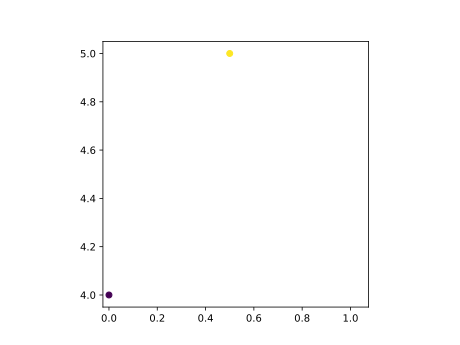
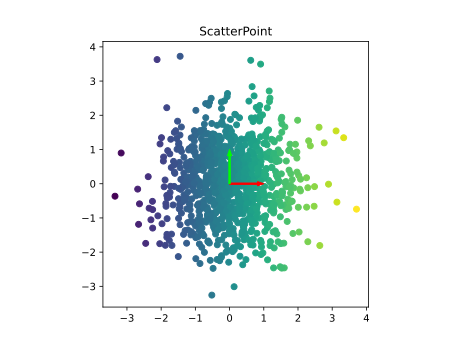
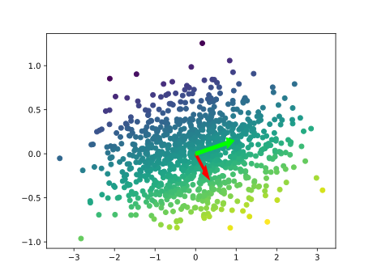

EBM deep learning with Pytorch

1 Libraries
import torch
import torch.nn as nn
#from res.plot_lib import set_default, show_scatterplot, plot_bases
#from matplotlib.pyplot import plot, title, axis
import matplotlib.pyplot as plt
device = torch.device("cuda:0" if torch.cuda.is_available() else "cpu")2 Prelude
Drawing basis
mbases = torch.cat((torch.zeros(2, 2), torch.eye(2))).to("cpu")
#>mbases := tensor([[0., 0.], [0., 0.], [1., 0.], [0., 1.]])
#mbases is a plt.arrow vector that points from origin [0., 0.] to [1., 0.]
#and [0., 0.] to [0., 1.]
def plot_bases(bases, width=0.04):
bases = bases.cpu()
bases[2:] -= bases[:2]
plt.arrow(*bases[0], *bases[2], width=width, color=(1,0,0), zorder=10, alpha=1., length_includes_head=True)
plt.arrow(*bases[1], *bases[3], width=width, color=(0,1,0), zorder=10, alpha=1., length_includes_head=True)
plt.savefig("output")
#plot_bases(mbases)
#>shows basis vectors3 Basics
Plot 3d vector representing (x,y,color)
dataset = torch.tensor([[0,4,0.1],[0.5,5,0.2]]).to("cpu")
## We load the points (0,4) (0.5,5) to cpu memory
## alternative is torch.tensor(..).to("cuda:0")
#dataset = torch.randn(30,3)
## creates 30 datapoints of 3-d vectors
colors = dataset[:,2]
points = dataset[:,(0,1)]
plot_bases(mbases)
plt.scatter(points[:,0],points[:,1],c=colors)
plt.axis('square')
plt.show()
\(\begin{bmatrix} \color{red}{ 0} \\ \color{red}{4} \\ \color{blue}{0.1} \end{bmatrix} \begin{bmatrix} \color{red}{0.5} \\ \color{red}{5} \\ \color{blue}{0.2} \end{bmatrix}\)
RED: Extract (x,y)-points (0,4) and (0.5,5)
BLUE: Extract 2 respective colors 0.1 and 0.2 for the two points.

4 Transformations
Above we had a 3d vector representing (x,y,color)
Now we will plot a 2d vector and have the color represent a static label of x-axis. (x,y,color=x)
Why? We will transform these set of points and use the color to get a feel for how each point is transformed.
dataset = torch.randn(1000,2).to("cpu")
## creates a set of 1000, 2-d vectors
colors = dataset[:,0] #color will be a 2nd representation of x-axis
points = dataset[:,(0,1)]
plot_bases(mbases)
plt.scatter(points[:,0],points[:,1],c=colors)
plt.axis('square')
plt.title("ScatterPoint")
plt.show()
Notice that 99% of the points fall within an imaginary circle of radius of 3 units.
Remember in statistics 68-95-99 rule (assuming normal dist )
The 3 unit radius circle = 3 standard deviations containing 99% of points
Therefore 1 unit radius circle = 1 standard deviation
5 SVD
Weight = torch.randn(2,2).to("cpu")
#Weight := tensor([[ 0.3439, 0.9503], [-0.2960, 0.1503]])
Output = points @ Weight.t()
print(Output.shape)
#SVD
U, S, V = torch.svd(Weight)
#>U := tensor([[ 0.9990, 0.0449], [ 0.0449, -0.9990]])
#>S := tensor([1.0115, 0.3292])
#>V := tensor([[ 0.3265, 0.9452], [ 0.9452, -0.3265]])
plt.scatter(Output[:,0],Output[:,1],c=colors)
mbases = mbases @ Weight.t()
#> mbases := tensor([[ 0.0000, 0.0000],[ 0.0000, 0.0000],[ 0.3439, -0.2960],[ 0.9503, 0.1503]])
assert Weight.allclose(U@torch.diag(S)@V.t())
## Weight.allclose() is effectively testing equality because pure equality w/ floating points is f***ing dangerous
plot_bases(mbases)
plt.show() Notice how the yellow dots rotated to the bottom
\[Weight = \begin{bmatrix} 0.3439 \\ 0.9503 \end{bmatrix} \begin{bmatrix} -0.2960 \\ 0.1503 \end{bmatrix}\] \[U = Rotation = \begin{bmatrix} 0.9990 & 0.0449 \\ 0.0449 & -0.9990 \end{bmatrix}\] \[S = Symmetry = \begin{bmatrix} 1.0115 & 0 \\ 0 & 0.3292 \end{bmatrix}\] \[V = Reflection = \begin{bmatrix} 0.3265 & 0.9452 \\ 0.9452 & -0.3265 \end{bmatrix}\]
\[SVD(Weight) = Rotation \times Symmetric\ Matrix \times Reflection^{T}\] \[W = U \begin{bmatrix} s_1 & 0 \\ 0 & s_2 \end{bmatrix} V^T\]
We can decompose the Weight matrix into 3 easily understood operations
- U = Rotation
- S = Symmetry
- V = Reflection
Pytorch makes the above linear transformation easy
model = nn.Sequential(
nn.Linear(2, 2, bias=False)
)
model.to("cpu")
with torch.no_grad():
Output = model(dataset)5.0.1 Linear Classifier
\[ y = sign(W \cdot X + b)\] Partitions the input space into two spaces divided by a hyperplane.
$y {-1,0,1} :: Classification $$
We are computing dot product of input vector against the weight vector. If these two vectors are orthogonal then \(y\) is 0 which is the separating hyperplane.
The hyperplane is NOT the weight vector
Imagine in 3d space, we have a 1d weight vector. The set of points that are orthogonal to this vector make up a 2d hyperplane. \(hyperplane = \{x \in \mathbb{R}^2 | w\cdot x = 0\}\)
6 Autograd
import torch
# Create a 2x2 tensor with gradient-accumulation capabilities
x = torch.tensor([[1, 2], [3, 4]], requires_grad=True, dtype=torch.float32)
print(x)
# tensor([[1., 2.],
# [3., 4.]], requires_grad=True)